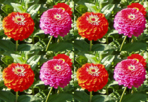
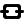

Figura 17.328. A mesma imagem, antes e depois de aplicar o filtro de Mosaico

Imagem original

(Nós reduzimos o tamanho da imagem de propósito)
Este filtro faz várias cópias da imagem original, do mesmo tamanho, ou de um tamanho reduzido, para uma nova imagem, maior. Em inglês, o nome desse filtro é “Tile”.Note que ele é bem diferente do filtro de Mosaico que está no menu →

Criar mosaico em um novo tamanho
- New width, New height
-
Input boxes and their arrow-heads allow you to enter the dimensions for the new image.
A nova imagem deve ser maior que a imagem original, caso contrário, você terá apenas um pequeno pedaço da imagem como resultado. Escolha tamanhos que sejam múltiplos do tamanho da imagem se você não quiser ter pastilhas truncadas.
By default, New width and New height are linked, indicated by the

chain symbol below the input boxes. If you want to set them separately, click on that chain symbol to unlink them. - New image
-
Keep this option checked to avoid modifying your original image.